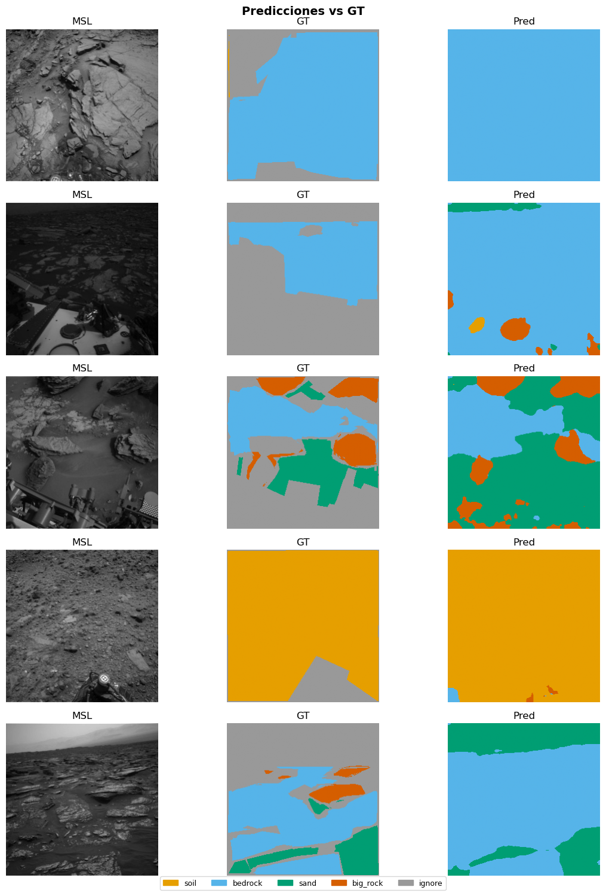

03b — SegFormer-B2#
Paper: Xie et al., NeurIPS 2021. Adaptación AI4MARS: Ankithac45/Semantic-Segmentation-on-Martian-Terrain
0. Configuración#
import sys; sys.path.append('.')
import torch, torch.nn as nn, torch.nn.functional as F
import pandas as pd, numpy as np
from mars_utils_fast import (
set_seed, get_or_create_split, build_dataloaders,
run_multi_seed, append_benchmark_results,
visualize_predictions, count_parameters,
NUM_CLASSES, IGNORE_INDEX, SEED
)
set_seed()
device = "cuda" if torch.cuda.is_available() else "cpu"
print(f"Device: {device}")
MODEL_NAME = "segformer_b2"
Device: cuda
1. Dataset#
df = pd.read_csv("processed/manifest_256.csv")
df_train, df_val, df_test = get_or_create_split(df)
train_loader, val_loader, test_loader = build_dataloaders(
df_train, df_val, df_test, batch_size=8, num_workers=0
)
✅ Split cargado desde processed\split_indices.pkl
Train: 16074 {'MSL': 15901, 'MER': 173}
Val : 3443 {'MSL': 3443}
Test : 3448 {'MSL': 3448}
2. Modelo — SegFormer-B2 via HuggingFace#
MiT-B2 encoder + All-MLP decoder. Preentrenado en ImageNet-1K.
try:
from transformers import SegformerForSemanticSegmentation, SegformerConfig
HF_AVAILABLE = True
except ImportError:
HF_AVAILABLE = False
print("transformers no instalado. Ejecuta: pip install transformers")
class SegFormerWrapper(nn.Module):
"""
Wrapper de SegFormer HuggingFace para compatibilidad con el pipeline.
La salida de SegFormer es resolución H/4. Se hace upsample a H.
"""
def __init__(self, num_classes=NUM_CLASSES):
super().__init__()
config = SegformerConfig.from_pretrained("nvidia/mit-b2")
config.num_labels = num_classes
config.id2label = {i: n for i, n in enumerate(["soil","bedrock","sand","big_rock"])}
config.label2id = {n: i for i, n in enumerate(["soil","bedrock","sand","big_rock"])}
self.model = SegformerForSemanticSegmentation.from_pretrained(
"nvidia/mit-b2", config=config, ignore_mismatched_sizes=True, use_safetensors=True
)
def forward(self, x):
out = self.model(pixel_values=x)
logits = out.logits # [B, C, H/4, W/4]
return F.interpolate(logits, size=x.shape[-2:],
mode="bilinear", align_corners=False)
def build_segformer():
return SegFormerWrapper(NUM_CLASSES)
model = build_segformer().to(device)
params_M = count_parameters(model)
print(f"Parámetros: {params_M:.2f}M")
with torch.no_grad():
dummy = torch.randn(2, 3, 256, 256).to(device)
out = model(dummy)
print(f"Output: {out.shape}")
c:\Users\User\miniconda3\envs\pytorch_gpu\lib\site-packages\huggingface_hub\file_download.py:143: UserWarning: `huggingface_hub` cache-system uses symlinks by default to efficiently store duplicated files but your machine does not support them in C:\Users\User\.cache\huggingface\hub\models--nvidia--mit-b2. Caching files will still work but in a degraded version that might require more space on your disk. This warning can be disabled by setting the `HF_HUB_DISABLE_SYMLINKS_WARNING` environment variable. For more details, see https://huggingface.co/docs/huggingface_hub/how-to-cache#limitations.
To support symlinks on Windows, you either need to activate Developer Mode or to run Python as an administrator. In order to activate developer mode, see this article: https://docs.microsoft.com/en-us/windows/apps/get-started/enable-your-device-for-development
warnings.warn(message)
Some weights of SegformerForSemanticSegmentation were not initialized from the model checkpoint at nvidia/mit-b2 and are newly initialized: ['decode_head.batch_norm.bias', 'decode_head.batch_norm.num_batches_tracked', 'decode_head.batch_norm.running_mean', 'decode_head.batch_norm.running_var', 'decode_head.batch_norm.weight', 'decode_head.classifier.bias', 'decode_head.classifier.weight', 'decode_head.linear_c.0.proj.bias', 'decode_head.linear_c.0.proj.weight', 'decode_head.linear_c.1.proj.bias', 'decode_head.linear_c.1.proj.weight', 'decode_head.linear_c.2.proj.bias', 'decode_head.linear_c.2.proj.weight', 'decode_head.linear_c.3.proj.bias', 'decode_head.linear_c.3.proj.weight', 'decode_head.linear_fuse.weight']
You should probably TRAIN this model on a down-stream task to be able to use it for predictions and inference.
Parámetros: 27.35M
Output: torch.Size([2, 4, 256, 256])
3. Entrenamiento (3 seeds)#
AdamW + CosineAnnealingLR, loss CE con ignore_index=255
import torch.optim as optim
def criterion_fn():
return nn.CrossEntropyLoss(ignore_index=IGNORE_INDEX)
def optimizer_fn(params):
return optim.AdamW(params, lr=6e-5, weight_decay=0.01, betas=(0.9, 0.999))
def scheduler_fn(opt):
return optim.lr_scheduler.CosineAnnealingLR(opt, T_max=30, eta_min=1e-6)
summary = run_multi_seed(
model_fn = build_segformer,
df_train=df_train, df_val=df_val, df_test=df_test,
criterion_fn = criterion_fn,
optimizer_fn = optimizer_fn,
scheduler_fn = scheduler_fn,
model_name = MODEL_NAME,
device = device,
seeds = [42, 123, 7],
num_epochs = 80, patience=10,
batch_size=10, num_workers=4, n_per_mission=700
)
──────────────────────────────────────────────────
Seed 42 | segformer_b2
c:\Users\User\Documents\DeepLearning\ai4mars-dataset-merged-0.6\mars_utils_fast.py:139: FutureWarning: DataFrameGroupBy.apply operated on the grouping columns. This behavior is deprecated, and in a future version of pandas the grouping columns will be excluded from the operation. Either pass `include_groups=False` to exclude the groupings or explicitly select the grouping columns after groupby to silence this warning.
df.groupby("mission", group_keys=False)
c:\Users\User\Documents\DeepLearning\ai4mars-dataset-merged-0.6\mars_utils_fast.py:139: FutureWarning: DataFrameGroupBy.apply operated on the grouping columns. This behavior is deprecated, and in a future version of pandas the grouping columns will be excluded from the operation. Either pass `include_groups=False` to exclude the groupings or explicitly select the grouping columns after groupby to silence this warning.
df.groupby("mission", group_keys=False)
Some weights of SegformerForSemanticSegmentation were not initialized from the model checkpoint at nvidia/mit-b2 and are newly initialized: ['decode_head.batch_norm.bias', 'decode_head.batch_norm.num_batches_tracked', 'decode_head.batch_norm.running_mean', 'decode_head.batch_norm.running_var', 'decode_head.batch_norm.weight', 'decode_head.classifier.bias', 'decode_head.classifier.weight', 'decode_head.linear_c.0.proj.bias', 'decode_head.linear_c.0.proj.weight', 'decode_head.linear_c.1.proj.bias', 'decode_head.linear_c.1.proj.weight', 'decode_head.linear_c.2.proj.bias', 'decode_head.linear_c.2.proj.weight', 'decode_head.linear_c.3.proj.bias', 'decode_head.linear_c.3.proj.weight', 'decode_head.linear_fuse.weight']
You should probably TRAIN this model on a down-stream task to be able to use it for predictions and inference.
=======================================================
segformer_b2_seed42 | device=cuda | AMP=True
=======================================================
Ep 1/80 | loss=0.5631 mIoU=0.5107 | val=0.6526 | rock=0.0014
Ep 2/80 | loss=0.2821 mIoU=0.6228 | val=0.6475 | rock=0.0065
Ep 3/80 | loss=0.2344 mIoU=0.6588 | val=0.6977 | rock=0.1069
Ep 4/80 | loss=0.2001 mIoU=0.6928 | val=0.7022 | rock=0.0812
Ep 5/80 | loss=0.1654 mIoU=0.7073 | val=0.7342 | rock=0.2099
Ep 6/80 | loss=0.1605 mIoU=0.7455 | val=0.7463 | rock=0.2665
Ep 7/80 | loss=0.1544 mIoU=0.7744 | val=0.8117 | rock=0.5766
Ep 8/80 | loss=0.1256 mIoU=0.7894 | val=0.8144 | rock=0.5333
Ep 9/80 | loss=0.1082 mIoU=0.7986 | val=0.8172 | rock=0.5613
Ep 10/80 | loss=0.1093 mIoU=0.8232 | val=0.8358 | rock=0.5791
Ep 11/80 | loss=0.0984 mIoU=0.7934 | val=0.8324 | rock=0.6047
Ep 12/80 | loss=0.0819 mIoU=0.8063 | val=0.8340 | rock=0.6078
Ep 13/80 | loss=0.0964 mIoU=0.8211 | val=0.8238 | rock=0.5768
Ep 14/80 | loss=0.0767 mIoU=0.8620 | val=0.8261 | rock=0.5713
Ep 15/80 | loss=0.0663 mIoU=0.8564 | val=0.8458 | rock=0.6283
Ep 16/80 | loss=0.0650 mIoU=0.8564 | val=0.8385 | rock=0.6205
Ep 17/80 | loss=0.0590 mIoU=0.8798 | val=0.8524 | rock=0.6434
Ep 18/80 | loss=0.0592 mIoU=0.8878 | val=0.8454 | rock=0.6242
Ep 19/80 | loss=0.0543 mIoU=0.8924 | val=0.8498 | rock=0.6181
Ep 20/80 | loss=0.0502 mIoU=0.8945 | val=0.8613 | rock=0.6587
Ep 21/80 | loss=0.0535 mIoU=0.8873 | val=0.8610 | rock=0.6461
Ep 22/80 | loss=0.0582 mIoU=0.9029 | val=0.8575 | rock=0.6325
Ep 23/80 | loss=0.0536 mIoU=0.8907 | val=0.8550 | rock=0.6414
Ep 24/80 | loss=0.0462 mIoU=0.9036 | val=0.8572 | rock=0.6504
Ep 25/80 | loss=0.0410 mIoU=0.8930 | val=0.8540 | rock=0.6358
Ep 26/80 | loss=0.0435 mIoU=0.9108 | val=0.8558 | rock=0.6343
Ep 27/80 | loss=0.0424 mIoU=0.9079 | val=0.8593 | rock=0.6484
Ep 28/80 | loss=0.0475 mIoU=0.9080 | val=0.8592 | rock=0.6413
Ep 29/80 | loss=0.0414 mIoU=0.9276 | val=0.8603 | rock=0.6497
Ep 30/80 | loss=0.0416 mIoU=0.9201 | val=0.8606 | rock=0.6537
Early stopping en epoch 30
Mejor val mIoU=0.8613 (epoch 20) | 718s
Test mIoU=0.7547
──────────────────────────────────────────────────
Seed 123 | segformer_b2
c:\Users\User\Documents\DeepLearning\ai4mars-dataset-merged-0.6\mars_utils_fast.py:139: FutureWarning: DataFrameGroupBy.apply operated on the grouping columns. This behavior is deprecated, and in a future version of pandas the grouping columns will be excluded from the operation. Either pass `include_groups=False` to exclude the groupings or explicitly select the grouping columns after groupby to silence this warning.
df.groupby("mission", group_keys=False)
c:\Users\User\Documents\DeepLearning\ai4mars-dataset-merged-0.6\mars_utils_fast.py:139: FutureWarning: DataFrameGroupBy.apply operated on the grouping columns. This behavior is deprecated, and in a future version of pandas the grouping columns will be excluded from the operation. Either pass `include_groups=False` to exclude the groupings or explicitly select the grouping columns after groupby to silence this warning.
df.groupby("mission", group_keys=False)
Some weights of SegformerForSemanticSegmentation were not initialized from the model checkpoint at nvidia/mit-b2 and are newly initialized: ['decode_head.batch_norm.bias', 'decode_head.batch_norm.num_batches_tracked', 'decode_head.batch_norm.running_mean', 'decode_head.batch_norm.running_var', 'decode_head.batch_norm.weight', 'decode_head.classifier.bias', 'decode_head.classifier.weight', 'decode_head.linear_c.0.proj.bias', 'decode_head.linear_c.0.proj.weight', 'decode_head.linear_c.1.proj.bias', 'decode_head.linear_c.1.proj.weight', 'decode_head.linear_c.2.proj.bias', 'decode_head.linear_c.2.proj.weight', 'decode_head.linear_c.3.proj.bias', 'decode_head.linear_c.3.proj.weight', 'decode_head.linear_fuse.weight']
You should probably TRAIN this model on a down-stream task to be able to use it for predictions and inference.
=======================================================
segformer_b2_seed123 | device=cuda | AMP=True
=======================================================
Ep 1/80 | loss=0.5860 mIoU=0.5106 | val=0.6534 | rock=0.0458
Ep 2/80 | loss=0.2721 mIoU=0.6436 | val=0.6111 | rock=0.0195
Ep 3/80 | loss=0.2260 mIoU=0.6653 | val=0.6726 | rock=0.0040
Ep 4/80 | loss=0.2168 mIoU=0.6826 | val=0.7059 | rock=0.4009
Ep 5/80 | loss=0.1769 mIoU=0.7066 | val=0.7003 | rock=0.1126
Ep 6/80 | loss=0.1377 mIoU=0.7376 | val=0.6382 | rock=0.0527
Ep 7/80 | loss=0.1419 mIoU=0.7473 | val=0.7875 | rock=0.4358
Ep 8/80 | loss=0.1261 mIoU=0.7752 | val=0.8335 | rock=0.5866
Ep 9/80 | loss=0.1290 mIoU=0.7810 | val=0.8225 | rock=0.5957
Ep 10/80 | loss=0.1121 mIoU=0.8265 | val=0.8011 | rock=0.5050
Ep 11/80 | loss=0.1004 mIoU=0.8136 | val=0.8249 | rock=0.5881
Ep 12/80 | loss=0.0893 mIoU=0.8300 | val=0.8424 | rock=0.5847
Ep 13/80 | loss=0.0908 mIoU=0.8347 | val=0.8243 | rock=0.5885
Ep 14/80 | loss=0.0702 mIoU=0.8622 | val=0.7884 | rock=0.4650
Ep 15/80 | loss=0.0662 mIoU=0.8713 | val=0.8546 | rock=0.6386
Ep 16/80 | loss=0.0598 mIoU=0.8607 | val=0.8483 | rock=0.6260
Ep 17/80 | loss=0.0633 mIoU=0.8716 | val=0.8510 | rock=0.6024
Ep 18/80 | loss=0.0612 mIoU=0.8707 | val=0.8546 | rock=0.6475
Ep 19/80 | loss=0.0530 mIoU=0.8970 | val=0.8513 | rock=0.6483
Ep 20/80 | loss=0.0594 mIoU=0.8778 | val=0.8407 | rock=0.6155
Ep 21/80 | loss=0.0565 mIoU=0.8681 | val=0.8532 | rock=0.6594
Ep 22/80 | loss=0.0508 mIoU=0.9094 | val=0.8494 | rock=0.6270
Ep 23/80 | loss=0.0514 mIoU=0.9137 | val=0.8528 | rock=0.6393
Ep 24/80 | loss=0.0482 mIoU=0.8782 | val=0.8441 | rock=0.6124
Ep 25/80 | loss=0.0427 mIoU=0.9069 | val=0.8572 | rock=0.6392
Ep 26/80 | loss=0.0473 mIoU=0.9043 | val=0.8479 | rock=0.6211
Ep 27/80 | loss=0.0392 mIoU=0.9269 | val=0.8552 | rock=0.6326
Ep 28/80 | loss=0.0393 mIoU=0.9001 | val=0.8480 | rock=0.6219
Ep 29/80 | loss=0.0420 mIoU=0.9129 | val=0.8541 | rock=0.6303
Ep 30/80 | loss=0.0467 mIoU=0.9066 | val=0.8519 | rock=0.6235
Ep 31/80 | loss=0.0397 mIoU=0.9057 | val=0.8503 | rock=0.6199
Ep 32/80 | loss=0.0428 mIoU=0.9212 | val=0.8503 | rock=0.6240
Ep 33/80 | loss=0.0459 mIoU=0.8935 | val=0.8497 | rock=0.6231
Ep 34/80 | loss=0.0442 mIoU=0.9083 | val=0.8490 | rock=0.6218
Ep 35/80 | loss=0.0423 mIoU=0.9081 | val=0.8542 | rock=0.6273
Early stopping en epoch 35
Mejor val mIoU=0.8572 (epoch 25) | 817s
Test mIoU=0.7701
──────────────────────────────────────────────────
Seed 7 | segformer_b2
c:\Users\User\Documents\DeepLearning\ai4mars-dataset-merged-0.6\mars_utils_fast.py:139: FutureWarning: DataFrameGroupBy.apply operated on the grouping columns. This behavior is deprecated, and in a future version of pandas the grouping columns will be excluded from the operation. Either pass `include_groups=False` to exclude the groupings or explicitly select the grouping columns after groupby to silence this warning.
df.groupby("mission", group_keys=False)
c:\Users\User\Documents\DeepLearning\ai4mars-dataset-merged-0.6\mars_utils_fast.py:139: FutureWarning: DataFrameGroupBy.apply operated on the grouping columns. This behavior is deprecated, and in a future version of pandas the grouping columns will be excluded from the operation. Either pass `include_groups=False` to exclude the groupings or explicitly select the grouping columns after groupby to silence this warning.
df.groupby("mission", group_keys=False)
Some weights of SegformerForSemanticSegmentation were not initialized from the model checkpoint at nvidia/mit-b2 and are newly initialized: ['decode_head.batch_norm.bias', 'decode_head.batch_norm.num_batches_tracked', 'decode_head.batch_norm.running_mean', 'decode_head.batch_norm.running_var', 'decode_head.batch_norm.weight', 'decode_head.classifier.bias', 'decode_head.classifier.weight', 'decode_head.linear_c.0.proj.bias', 'decode_head.linear_c.0.proj.weight', 'decode_head.linear_c.1.proj.bias', 'decode_head.linear_c.1.proj.weight', 'decode_head.linear_c.2.proj.bias', 'decode_head.linear_c.2.proj.weight', 'decode_head.linear_c.3.proj.bias', 'decode_head.linear_c.3.proj.weight', 'decode_head.linear_fuse.weight']
You should probably TRAIN this model on a down-stream task to be able to use it for predictions and inference.
=======================================================
segformer_b2_seed7 | device=cuda | AMP=True
=======================================================
Ep 1/80 | loss=0.5284 mIoU=0.5166 | val=0.6017 | rock=0.0000
Ep 2/80 | loss=0.3034 mIoU=0.6204 | val=0.6417 | rock=0.0437
Ep 3/80 | loss=0.2394 mIoU=0.6776 | val=0.6884 | rock=0.0471
Ep 4/80 | loss=0.2272 mIoU=0.6843 | val=0.6791 | rock=0.3191
Ep 5/80 | loss=0.1852 mIoU=0.7247 | val=0.6787 | rock=0.0336
Ep 6/80 | loss=0.1668 mIoU=0.7287 | val=0.7796 | rock=0.4233
Ep 7/80 | loss=0.1428 mIoU=0.7664 | val=0.7110 | rock=0.0999
Ep 8/80 | loss=0.1322 mIoU=0.7725 | val=0.7537 | rock=0.2742
Ep 9/80 | loss=0.1051 mIoU=0.7752 | val=0.7955 | rock=0.4641
Ep 10/80 | loss=0.0973 mIoU=0.7978 | val=0.7816 | rock=0.4750
Ep 11/80 | loss=0.0949 mIoU=0.7886 | val=0.8283 | rock=0.5562
Ep 12/80 | loss=0.0995 mIoU=0.8338 | val=0.7929 | rock=0.4208
Ep 13/80 | loss=0.0930 mIoU=0.8142 | val=0.8138 | rock=0.5102
Ep 14/80 | loss=0.0758 mIoU=0.8539 | val=0.8281 | rock=0.5378
Ep 15/80 | loss=0.0733 mIoU=0.8348 | val=0.8432 | rock=0.5900
Ep 16/80 | loss=0.0609 mIoU=0.8776 | val=0.8294 | rock=0.5813
Ep 17/80 | loss=0.0581 mIoU=0.8553 | val=0.8301 | rock=0.5414
Ep 18/80 | loss=0.0664 mIoU=0.8835 | val=0.8411 | rock=0.5894
Ep 19/80 | loss=0.0608 mIoU=0.8609 | val=0.8404 | rock=0.6240
Ep 20/80 | loss=0.0641 mIoU=0.8938 | val=0.8430 | rock=0.5811
Ep 21/80 | loss=0.0546 mIoU=0.8485 | val=0.8399 | rock=0.6042
Ep 22/80 | loss=0.0568 mIoU=0.8807 | val=0.8618 | rock=0.6576
Ep 23/80 | loss=0.0557 mIoU=0.8997 | val=0.8584 | rock=0.6546
Ep 24/80 | loss=0.0469 mIoU=0.8990 | val=0.8600 | rock=0.6610
Ep 25/80 | loss=0.0470 mIoU=0.9092 | val=0.8606 | rock=0.6548
Ep 26/80 | loss=0.0446 mIoU=0.9242 | val=0.8599 | rock=0.6551
Ep 27/80 | loss=0.0440 mIoU=0.9087 | val=0.8495 | rock=0.6323
Ep 28/80 | loss=0.0512 mIoU=0.9017 | val=0.8535 | rock=0.6409
Ep 29/80 | loss=0.0444 mIoU=0.9079 | val=0.8556 | rock=0.6455
Ep 30/80 | loss=0.0468 mIoU=0.9156 | val=0.8606 | rock=0.6543
Ep 31/80 | loss=0.0460 mIoU=0.9131 | val=0.8528 | rock=0.6393
Ep 32/80 | loss=0.0432 mIoU=0.8944 | val=0.8621 | rock=0.6599
Ep 33/80 | loss=0.0525 mIoU=0.9038 | val=0.8600 | rock=0.6485
Ep 34/80 | loss=0.0442 mIoU=0.9081 | val=0.8569 | rock=0.6440
Ep 35/80 | loss=0.0506 mIoU=0.9007 | val=0.8472 | rock=0.6206
Ep 36/80 | loss=0.0489 mIoU=0.9140 | val=0.8679 | rock=0.6717
Ep 37/80 | loss=0.0461 mIoU=0.9050 | val=0.8638 | rock=0.6557
Ep 38/80 | loss=0.0425 mIoU=0.9028 | val=0.8535 | rock=0.6324
Ep 39/80 | loss=0.0432 mIoU=0.9194 | val=0.8456 | rock=0.6209
Ep 40/80 | loss=0.0441 mIoU=0.9197 | val=0.8654 | rock=0.6645
Ep 41/80 | loss=0.0384 mIoU=0.9135 | val=0.8439 | rock=0.6134
Ep 42/80 | loss=0.0565 mIoU=0.8892 | val=0.8176 | rock=0.5580
Ep 43/80 | loss=0.0477 mIoU=0.8988 | val=0.8515 | rock=0.6241
Ep 44/80 | loss=0.0513 mIoU=0.9000 | val=0.8404 | rock=0.5764
Ep 45/80 | loss=0.0664 mIoU=0.8976 | val=0.8264 | rock=0.6026
Ep 46/80 | loss=0.0643 mIoU=0.8939 | val=0.8443 | rock=0.5978
Early stopping en epoch 46
Mejor val mIoU=0.8679 (epoch 36) | 1114s
Test mIoU=0.7526
=======================================================
segformer_b2: mIoU=0.7592±0.0078 IC95=±0.0088
IoU(soil)=0.9329±0.0025
IoU(bedrock)=0.9366±0.0019
IoU(sand)=0.8654±0.0044
IoU(big_rock)=0.3016±0.0280
=======================================================
4. Guardado y Visualización#
append_benchmark_results(
model_name=MODEL_NAME, best_epoch=summary["best_epoch_mean"],
val_miou=summary["mIoU_mean"], test_miou=summary["mIoU_mean"],
test_miou_std=summary["mIoU_std"], test_miou_ci95=summary["mIoU_ci95"],
test_acc=summary["pixel_acc_mean"],
iou_soil=summary["iou_soil_mean"], iou_bedrock=summary["iou_bedrock_mean"],
iou_sand=summary["iou_sand_mean"], iou_bigrock=summary["iou_big_rock_mean"],
params_M=params_M, train_time_s=summary["train_time_mean"],
)
best_model = build_segformer().to(device)
ckpt = torch.load(f"checkpoints/{MODEL_NAME}_seed42_best.pth", map_location=device)
best_model.load_state_dict(ckpt["model_state"])
visualize_predictions(best_model, df_test, device, n=5,
save_path=f"results/{MODEL_NAME}_predictions.png")
print(f"mIoU: {summary['mIoU_mean']:.4f} ± {summary['mIoU_std']:.4f}")
✅ Resultados en results\benchmark_results.csv
Some weights of SegformerForSemanticSegmentation were not initialized from the model checkpoint at nvidia/mit-b2 and are newly initialized: ['decode_head.batch_norm.bias', 'decode_head.batch_norm.num_batches_tracked', 'decode_head.batch_norm.running_mean', 'decode_head.batch_norm.running_var', 'decode_head.batch_norm.weight', 'decode_head.classifier.bias', 'decode_head.classifier.weight', 'decode_head.linear_c.0.proj.bias', 'decode_head.linear_c.0.proj.weight', 'decode_head.linear_c.1.proj.bias', 'decode_head.linear_c.1.proj.weight', 'decode_head.linear_c.2.proj.bias', 'decode_head.linear_c.2.proj.weight', 'decode_head.linear_c.3.proj.bias', 'decode_head.linear_c.3.proj.weight', 'decode_head.linear_fuse.weight']
You should probably TRAIN this model on a down-stream task to be able to use it for predictions and inference.
C:\Users\User\AppData\Local\Temp\ipykernel_17716\1771776610.py:11: FutureWarning: You are using `torch.load` with `weights_only=False` (the current default value), which uses the default pickle module implicitly. It is possible to construct malicious pickle data which will execute arbitrary code during unpickling (See https://github.com/pytorch/pytorch/blob/main/SECURITY.md#untrusted-models for more details). In a future release, the default value for `weights_only` will be flipped to `True`. This limits the functions that could be executed during unpickling. Arbitrary objects will no longer be allowed to be loaded via this mode unless they are explicitly allowlisted by the user via `torch.serialization.add_safe_globals`. We recommend you start setting `weights_only=True` for any use case where you don't have full control of the loaded file. Please open an issue on GitHub for any issues related to this experimental feature.
ckpt = torch.load(f"checkpoints/{MODEL_NAME}_seed42_best.pth", map_location=device)

✅ results/segformer_b2_predictions.png
mIoU: 0.7592 ± 0.0078